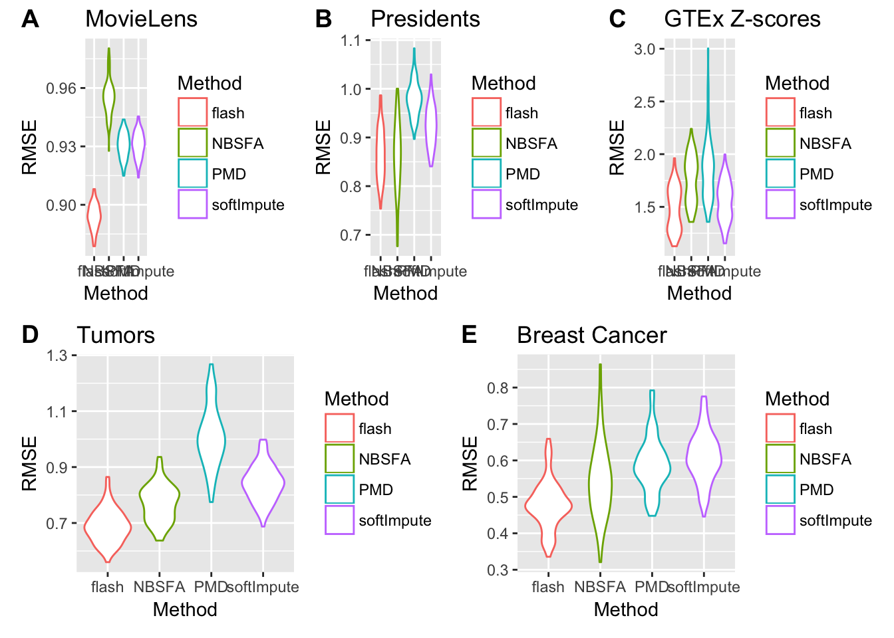
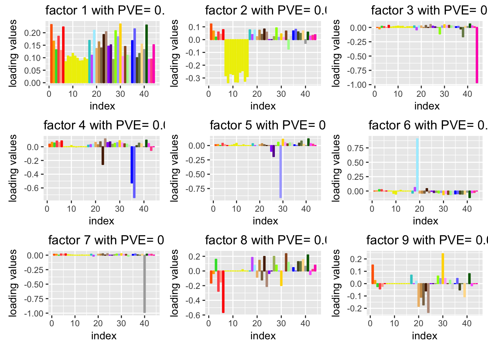
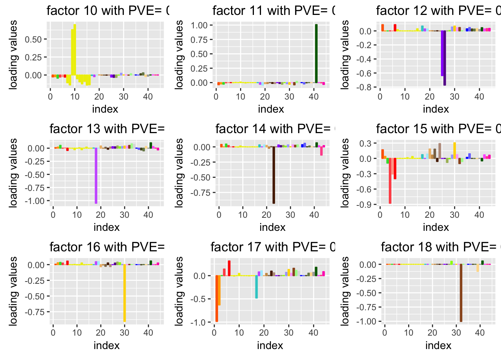
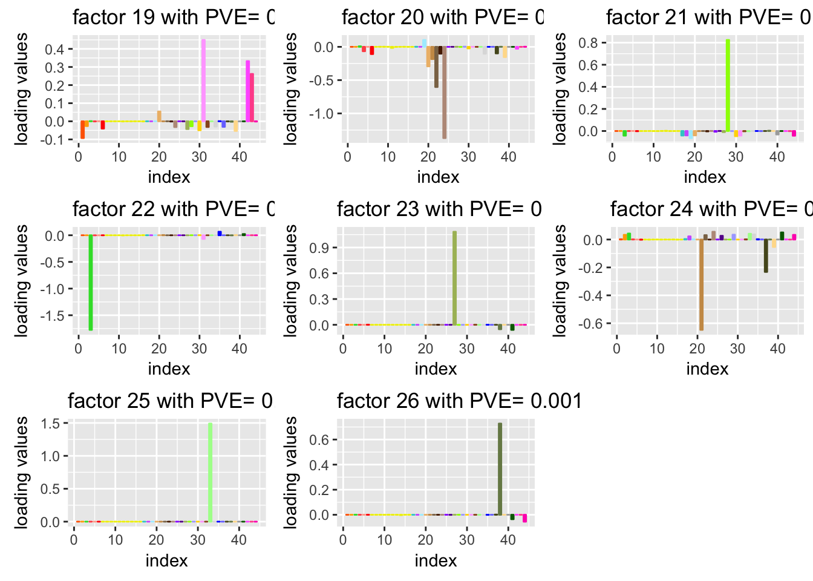

this is for the result part of the draft
Wei Wang
2017-03-15
Last updated: 2017-04-03
Code version: 8dabd13
data analysis on the normalized data
missing data imputation
Tumors data
We test the performance of our method on the real data where there is no ground truth. The performance is assessed by the predictive Mean Square Error (MSE) for the missing value, where the true value is know and chosen to be missing. This data set is a microarray data from ‘denoiseR’ package containing 43 brain tumors of four types and 356 continous variable related with the expression data. we set the rank equal to 20 for FLASH, PMD and softImpute, since we find that the rank of the low rank structure is almost always smaller than 20, whihc is around 15-20.

tumor data
Movie data
The MovieLens data set is available at the GroupLens Research group which is usualy used for the exploration of recommender systems. The idea of the prediction is that users with similar preference on movies might have similar ratings so that we can predict tha ratings of certain user based on other users sharing some common preference. There are several data sets available for stable bench mark and we choose the smallest one. The MovieLens 100K data set we used here is a data set with about 100K ratings from 1000 user and 1700 movies. The ratings are integers from 0 to 5 represent preference of users. In this data, all the ratings are nonnegative, so we center and scale the data for each users. We focus on the structure that the users share common prefernce on movies, so the preference of each user on each movies remains the same.

Movie data
presidential address
This data set is a contingency table cross-tabulating with 13 rows and 836 columns, where rows stands for US presidents from 1940 to 2009 and columns are correspoding the words they used in thier inaugural addresses. This data set comes from ‘denoiseR’ R package. We make one more pre-processing procedure before apply all the methods. The pre-precessed data is center and scale on both rows ans columns. It is because the words and the frequency of those words vary a lot among different presidents. This is data is different from movie ratings data of which the ratings can only take values from 0 to 5. Some words show up more frequently than others, such as “a” and “the”, so we should center and scale the data not only by rows but also by coumns.

president data
GTEx eQTL summary statistic
This data set is summary statistics (Z-score) from eQTL analysis. We apply FLASH on the matrix of summary statistics which are Z-scores with , where the rows index different SNP-gene pairs and the columns index tissues (or cell types). We used the Z-scores for candidate local (“cis”) eQTLs for each gene, distributed by the GTEx project (v6 release).

GTEx data
This data set is
Breast cancer data
The Breast cancer data is from West et al. (2007). There are 251 samples and 226 genes in this data set. For those algorithm we choose, we set the rank equal to 50 which is close the the rank of the estimation from the NSFA results. After some try of FLASH, we find that the rank picked by FLASH is also around 40-50. Following the pre-processing procedure from NSFA, we also use the centered data. Since this input data set is Z-scores data, we didn’t use any pre-processing procedure.

Breast Cancer data
library(ggplot2)
movie_res = readRDS("../data/missingvalue/box_movies.rds")
tumor_res = readRDS("../data/missingvalue/box_tumor.rds")
president_res = readRDS("../data/missingvalue/box_president.rds")
breast_res = readRDS("../data/missingvalue/box_breast.rds")
gtex_res = readRDS("../data/missingvalue/box_gtex.rds")
plot_res = function(output,title = "data"){
rmse = as.vector(output)
N = dim(output)[1]
methods = rep(c("flash","NBSFA","PMD","softImpute"), each = N)
df = data.frame(RMSE = rmse, Method = methods )
p<-ggplot(df, aes(x=Method, y=RMSE, color=Method)) +
#geom_boxplot()
geom_violin()+
ggtitle(title)+theme_gray()
p
}
pm = plot_res(movie_res,"MovieLens")
pp = plot_res(president_res,"Presidents")
pg = plot_res(gtex_res,"GTEx Z-scores")
pt = plot_res(tumor_res,"Tumors")
pb = plot_res(breast_res,"Breast Cancer")
library(cowplot)
firstrow = plot_grid(pm, pp,pg, labels = c("A","B","C"), ncol = 3,rel_widths = c(1, 1))
secondrow <- plot_grid(pt, pb, labels = c("D","E"), ncol = 2,rel_widths = c(1, 1))
plot_grid(firstrow, secondrow, ncol = 1,rel_widths = c(1, 0.6))
gene expression data
To show the flexibility of FLASH, we take the summary statistics from the expression Quantitative Trait Loci (eQTLs) of 44 human Tissues. The original data is from Genotype Tissue Expression (GTEx) project. The aim of GTEx project “s to increase our understanding of how changes in our genes contribute to common human diseases, in order to improve health care for future generations.” We try to understand the " which SNPs are eQTLs (i.e. associated with expression) in which tissues.Answering this could help distinguish regulatory regions and mechanisms that are specific to a few tissues vs shared among many tissues.It could also help with analyses that aim to integrate eQTL results with GWAS results to help identify the tissues that are most relevant to any specific complex disease (e.g. [18, 19])."
We apply FLASH on the matrix of summary statistics which are Z-scores. “We analysed the 16,069 genes for which univariate effect estimates were available for all 44 tissues we considered; the filtering criteria used ensure that these genes show at least some indication of expression in all 44 tissues.”
dat = read.table('../data/GTExColors.txt', sep = '\t', comment.char = '')
colordata = dat[c(1:6,9:18,21:23,26:30,32,33,35,36,38:53),1:2]
# barplot(rep(1, nrow(dat)), col = as.character(dat[,2]))
# just plot for loadings
plot.factor = function(Y,g,k = 1,loading_label = FALSE,color.fill = NULL){
library(ggplot2)
N = dim(Y)[1]
P = dim(Y)[2]
sample_name = row.names(Y)
variable_name = colnames(Y)
# plot the expectation of PVE
ssY = sum(Y^2)
K = dim(g$l)[2]
pve = (sapply(seq(1,K),function(x){ sum(g$l[,x]^2 %*% t(g$f[,x]^2)) }))/ssY
pve_dat = data.frame(index = seq(1,K),EPVE = pve)
plot_pve <- ggplot(pve_dat, aes(index, EPVE)) + geom_point(size = 4) + geom_line(linetype = "dotdash")
# plot the loadings
if(loading_label == TRUE){
plot_l = plot_factor(g$l[,k],pve[k],N,k,f_lables = row.names(Y),y_lab = "loading values",color.fill = color.fill)
}else{
plot_l = plot_factor(g$l[,k],pve[k],N,k,f_lables =NA,y_lab = "loading values",color.fill = color.fill)
}
return(list(plot_pve = plot_pve,plot_l = plot_l))
}
#' plot_f
#'
#' plot the factor
#' @return list of factor, loading and variance of noise matrix
#' \itemize{
#' \item{\code{plot_f}} {is a ggplot object for the factors}
#' }
#' @param f factor to plot
#' @param pve pve for this factor
#' @param P the lenght of this factor
#' @param k the order of the factor
#' @param f_lables the lables for the factor
#' @param y_lab is the name of the Y axis
#' @details plot_f is to plot the factor as barplot.
#'
#' @importFrom ggplot2 ggplot
#'
plot_factor = function(f,pve,P,k,f_lables = NA,y_lab = "factor values",color.fill = NA){
library(ggplot2)
if(any(is.na(f_lables))){
f_dat <- data.frame(variable = 1:P, Factor = f,
sign.f = factor(sign(f)),
hjust = factor(sign(f)))
plot_f = ggplot(f_dat,aes(x = variable,y = Factor,fill = factor(variable),color = factor(variable))) +
geom_bar(stat = "identity",width = 0.6) +scale_color_manual(values=color.fill)+
scale_fill_manual(values=color.fill) + theme_grey()+ theme(legend.position="none",plot.background = element_rect()) +
labs(title = paste("factor",k,"with PVE=",max(0.001,round(pve,3))), y = y_lab ,x = "index",color = "index",fill="index")
}else{
f_dat <- data.frame(variable = 1:P, Factor = f,
sign.f = factor(sign(f)),
variablenames = f_lables,
hjust = factor(sign(f)))
# 120% lim
range_f = max(f) - min(f)
upper_f = max(f,0) + 0.15 * range_f
lower_f = min(f,0) - 0.15 * range_f
plot_f = ggplot(f_dat,aes(x = variable,y = Factor,fill = factor(variable),color = factor(variable))) +
geom_bar(stat = "identity",width = 0.6) +scale_color_manual(values=color.fill)+
scale_fill_manual(values=color.fill) + theme_grey()+ theme(legend.position="none",plot.background = element_rect()) +
geom_text(size = 2.75,angle = 90,hjust = as.character(f_dat$hjust),
nudge_y = sign(f_dat$Factor) * 0.1 * mean(abs(f_dat$Factor)) ) +
ylim(lower_f,upper_f) +
labs(title = paste("factor",k,"with PVE=",max(0.001,round(pve,3)) ), y = y_lab,x = "index")
}
return(plot_f)
}
load("../data/GTExdata/bflashvarcol.rds")
load("../data/GTExdata/gtexEQTL_zscore.rds")
# plot.factor(Y = t(zscore),g = b_flash,k = 1,loading_label = FALSE,color.fill = as.character(colordata[,2]))
# plot_f = ggplot(f_dat,aes(x = factor(variable),y = Factor,color = factor(variable))) +
# geom_bar(stat = "identity",width = 0.5,fill = "white") +
# scale_color_manual(values=color.fill) + theme(legend.position="none")
# ggplot(f_dat,aes(x = factor(variable),y = Factor,fill = factor(variable))) +
# geom_bar(stat = "identity",width = 0.5,color = "black") +
# scale_fill_manual(values=color.fill) + theme(legend.position="none")
pic = list()
for(i in 1:26){
pic[[i]] = plot.factor(Y = t(zscore),g = b_flash,k = i,
loading_label = FALSE,color.fill = as.character(colordata[,2]))$plot_l
}
library(cowplot)
plot_grid(pic[[1]], pic[[2]],pic[[3]],
pic[[4]],pic[[5]],pic[[6]],
pic[[7]],pic[[8]],pic[[9]],
labels = c("","","","","","","","",""), ncol = 3)
plot_grid(pic[[10]], pic[[11]],pic[[12]],
pic[[13]],pic[[14]],pic[[15]],
pic[[16]],pic[[17]],pic[[18]],
labels = c("","","","","","","","",""), ncol = 3)
plot_grid(pic[[19]], pic[[20]],pic[[21]],
pic[[22]],pic[[23]],pic[[24]],
pic[[25]],pic[[26]],
labels = c("","","","","","","","",""), ncol = 3)
line1 = plot_grid(pic[[19]], pic[[20]],pic[[21]],
labels = c("","",""), ncol = 3)
line2 = plot_grid(pic[[22]],pic[[23]],pic[[24]],
labels = c("","",""), ncol = 3)
pic_26 = pic[[26]] + theme(legend.direction = "horizontal",legend.position = "right")+guides(col = guide_legend(ncol = 8))
line3 = plot_grid(pic[[25]],pic_26,
labels = c("",""), ncol = 2,rel_widths = c(1, 2))
plot_grid(line1,line2,line3,labels = c("","",""), ncol = 1)
# need one for the lengendother potential extension
NMF
In ashr, there is a option that we can choose the prior to be half uniform or half normal, which leads to the final estimate is non-negative. In this case, we apply FLASH for non-negative matrix factorization with proper intial values. For example, we can use NMF result as intial value and apply FLASH with backfitting algorithm to get a flexible sparse solutions of factors and loadings.
tensor flash
In our frame work, it is easy to extend out method to tensor factorization. And the benfit of FLASH is we don’t need to estimate the tuning parmeters in each mode.
rank decision issue
there is somethig we don’t fully understand. the simplest case is comparing rank 0 and rank 1 case.
Session information
sessionInfo()R version 3.3.0 (2016-05-03)
Platform: x86_64-apple-darwin13.4.0 (64-bit)
Running under: OS X 10.12.3 (unknown)
locale:
[1] en_US.UTF-8/en_US.UTF-8/en_US.UTF-8/C/en_US.UTF-8/en_US.UTF-8
attached base packages:
[1] stats graphics grDevices utils datasets methods base
other attached packages:
[1] workflowr_0.4.0 rmarkdown_1.3 cowplot_0.7.0 ggplot2_2.2.1
loaded via a namespace (and not attached):
[1] Rcpp_0.12.9 rprojroot_1.2 digest_0.6.12 assertthat_0.1
[5] grid_3.3.0 plyr_1.8.4 backports_1.0.5 gtable_0.2.0
[9] git2r_0.18.0 magrittr_1.5 evaluate_0.10 scales_0.4.1
[13] stringi_1.1.2 lazyeval_0.2.0 labeling_0.3 tools_3.3.0
[17] stringr_1.2.0 munsell_0.4.3 yaml_2.1.14 colorspace_1.3-2
[21] htmltools_0.3.5 knitr_1.15.1 tibble_1.2 This R Markdown site was created with workflowr